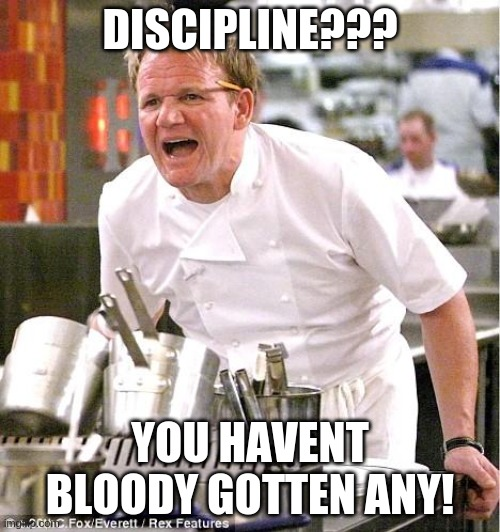

Discipline: The Subtle Art of Tricking Yourself Into Doing What You Do Not Want To
Often chefs will talk about passion. In fact this is not really relegated to just chefs but also any creative field. Discipline is nothing more than doing what needs to be done even when that is the thing you want to do the absolute least. Chefs will beat this in to you while training you.
